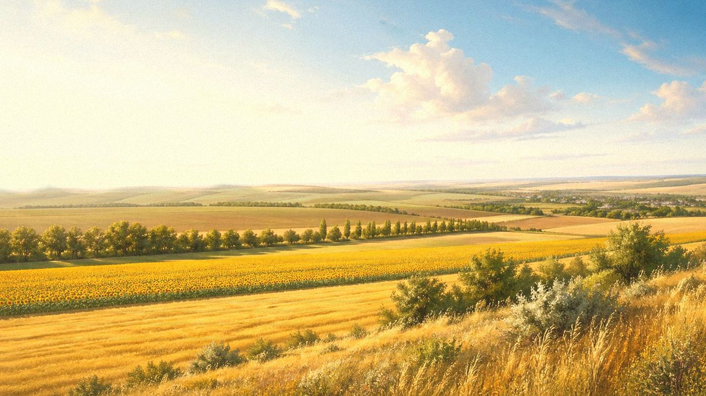

Главная / Курская область

Курская область
Что посадить
Что посадить
в Курской
области
Выберите зону Курской области: северо-западную лесостепь, центральные чернозёмы или более тёплый юг с открытыми полями и долинами рек.
Чуть прохладнее и влажнее юга: основа — картофель, капустные, корнеплоды, яблоня, ягоды и ранние овощи.
Открыть страницу зоны → центральная курская лесостепьСбалансированная зона для большинства садовых и огородных культур: чернозём, хороший прогрев и умеренный риск засухи.
Открыть страницу зоны → южные чернозёмы и долины Сейма и ПсёлаБолее тёплая часть области: шире возможности для томатов, кукурузы, тыквенных и укрывного винограда, но сильнее роль полива.
Открыть страницу зоны →